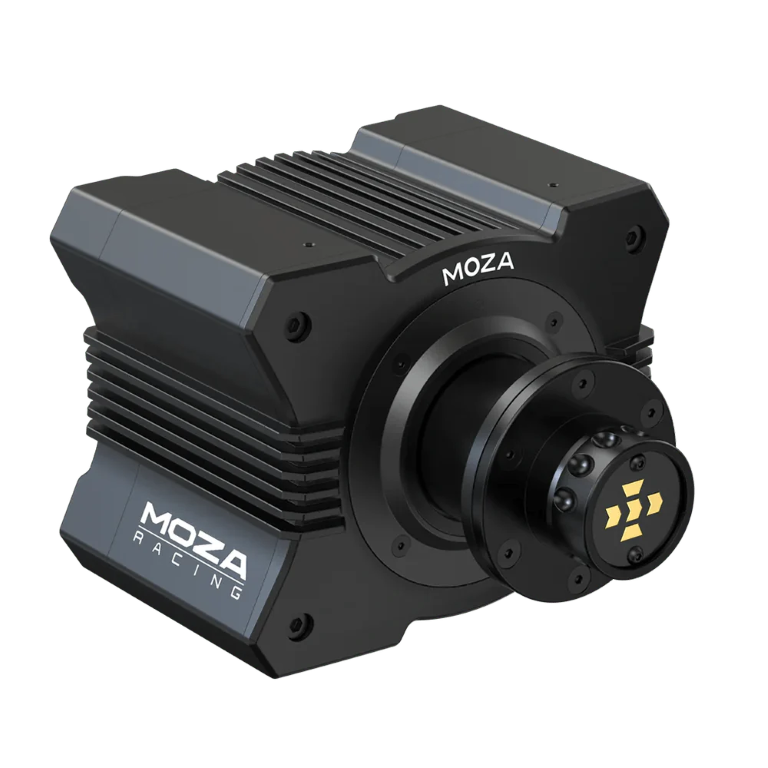
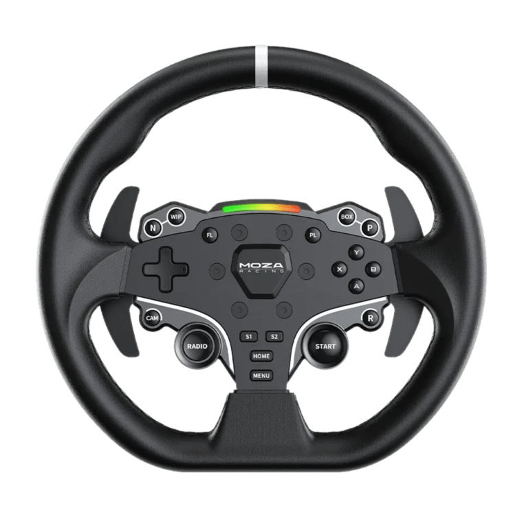
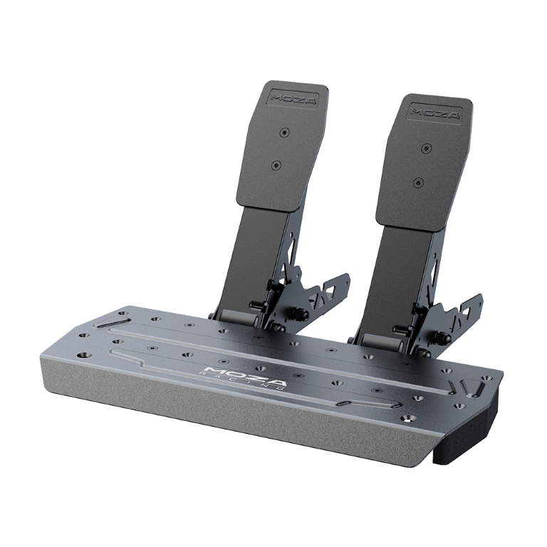
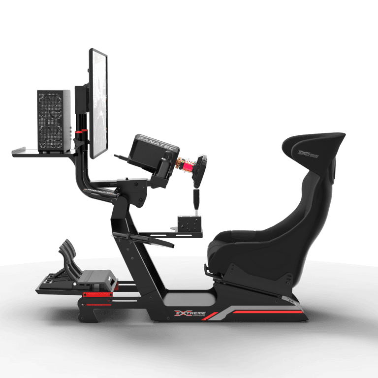
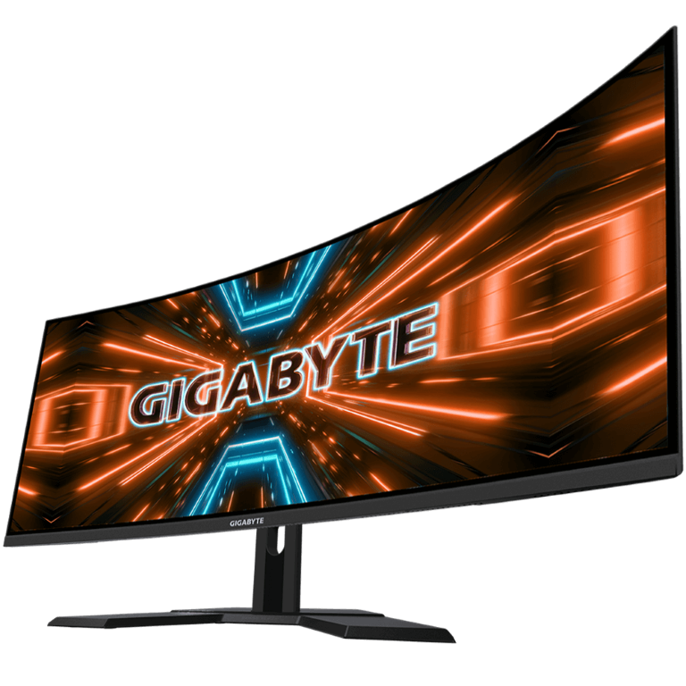
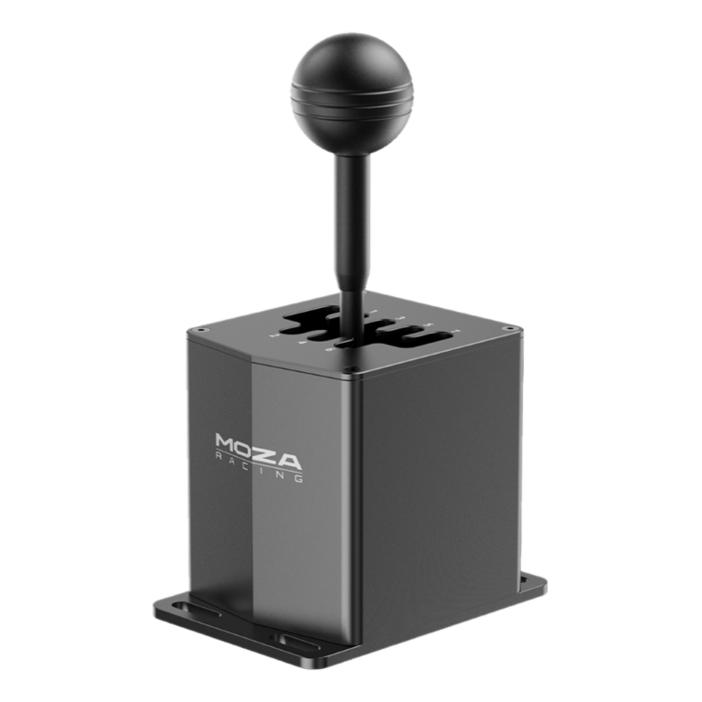
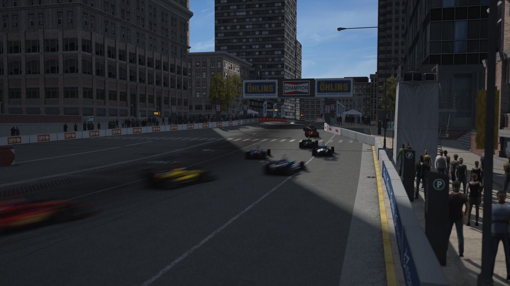
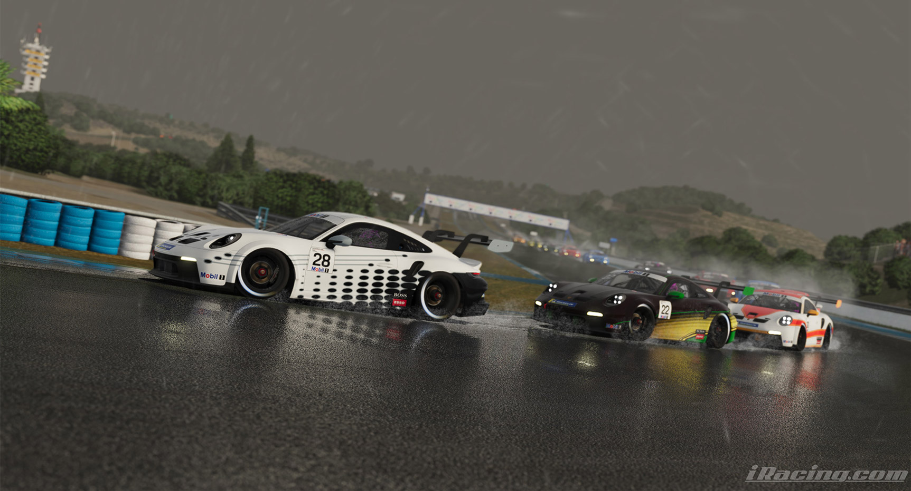
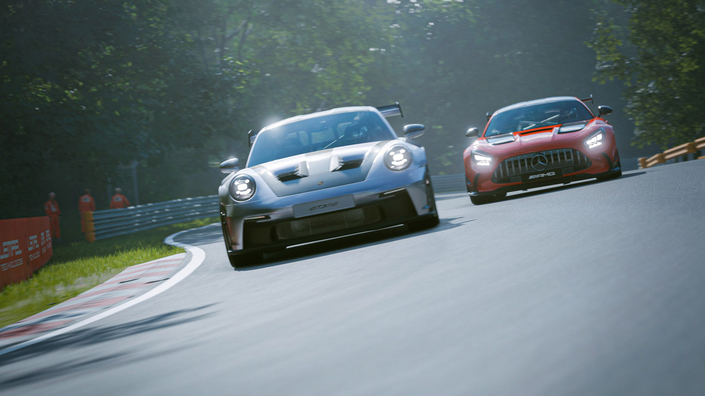

Qu’est-ce que le simracing?
Le simracing, contraction de simulation et racing (course en anglais), est une discipline virtuelle qui reproduit fidèlement l’expérience de la course automobile. À l’aide de simulateurs de conduite, les passionnés de sport automobile peuvent s’immerger dans des courses virtuelles, que ce soit pour le plaisir, l’entraînement ou la compétition.
Les simulateurs de conduite varient en complexité, allant des configurations basiques avec un volant et des pédales à des setups sophistiqués comprenant des cockpits réglables, des écrans panoramiques ou même des casques de réalité virtuelle. Cette diversité permet à chacun de créer un environnement de conduite adapté à ses besoins et à son budget.
Le simracing offre une multitude de possibilités, que ce soit pour s’affronter en ligne avec d’autres joueurs, participer à des championnats virtuels, ou simplement s’entraîner sur des circuits du monde entier.
Matériel
Le simracing nécessite un équipement spécifique pour reproduire fidèlement l’expérience de la conduite automobile. Voici les principaux éléments constitutifs d’un setup de simracing:
- Base:
- La base est le « moteur » qui est entre le volant et l’ordinateur. C’est le « cerveau ». La base reproduit les vibrations, dit retour de force afin de simuler les vibrations de la route, les frottements des pneus, etc. 
- Volant:
- Le volant est l’interface entre le joueur et la base. Il existe une variété de volants disponibles, allant des modèles de base avec quelques boutons aux volants haut de gamme avec écran intégré, boutons et interrupteurs à souhait. 
- Pédales:
- Bien sûr, avec le volant, nous avons aussi les pédales. Accélérateur, frein et embrayage, tout ce qu’il faut pour conduire. 
- Cockpit:
- Le cockpit permet d’installer les différentes pièces (volant, pédales, etc.) sur un chassis afin de tout garder à portée de main, sur quelque chose de rigide. Les cockpits sont généralement composés d’aluminium. 
- Écrans ou casque de réalité virtuelle:
- Les écrans ou les casques de réalité virtuelle fournissent la vue du conducteur pendant la course. Les écrans panoramiques ou les casques VR offrent une immersion supplémentaire en reproduisant un champ de vision réaliste. 
- Accessoires:
- D’autres accessoires comme les leviers de vitesses, les freins à main, les supports pour écrans et les systèmes de vibration peuvent améliorer l’expérience de jeu, moyennant un coût supplémentaire. 
Bien sûr, il est tout à fait possible de jouer à la manette; mais dû aux physiques avancées des jeux de simracing, il est plus compliqué de bien contrôler la voiture.
Logiciel
Il y existe plusieurs jeux propre au simracing, chacun ayant une physique différente; mais encore une disponibilité de véhicules et de circuits variée.
Les jeux de simracing les plus populaires incluent:
- La série Assetto Corsa
- 
- Assetto Corsa est un simulateur de conduite réaliste qui offre une variété de véhicules et de circuits à explorer. Ce jeu se démarque par son support pour les « mods »; des fichiers ajoutés au jeu afin d’améliorer l’expérience de jeu.
- Assetto Corsa Competizione, est quand à lui une version totalement différente du jeu, se concentrant sur le championnat GT World Challenge, un championnat composé exclusivement de voitures de type GT2, GT3 et GT4 (avec quelques autres catégories moins importantes) et de circuits officiels de la série.
- iRacing
- 
- iRacing est un simulateur de course en ligne sur PC qui s’est démarqué par son système de license et son sérieux. En effet, iRacing donne un certain « ranking » avec des points attribués (ou retirés) en fonction de la performance du joueur. Ce système permet donc de classer les joueurs en fonction de leur niveau de compétence. Ce simulateur était à l’origine axé pour le Nascar, mais s’est diversifié dans les alentours de 2017 pour proposer des courses de Formule 1, de GT3, de rallycross, etc.
- Gran Turismo 7
- 
- Gran Turismo 7 est un jeu de course automobile disponible sur PS4 et PS5. Ce jeu offre une grande variété de véhicules et de circuits (fictifs et réels) ainsi qu’un mode carrière complet et un multijoueur exemplaire.
PDV Pilote
Dans ma « carrière » simracing, j’ai eu l’occasion de conduire sur plusieurs simulateurs; mais aussi de participer à des championnats et même parfois les organiser. C’est souvent la même chose: s’entraîner avec une certaine voiture sur un certain circuit, pour finalement se retrouver en course avec des adversaires.
Ce que j’apprécie le plus, c’est la compétition mais aussi le côté technique de la chose. Par exemple, dans des endurances, il faut gérer la consommation d’essence, les pneus, les arrêts aux stands, etc.
Vous voulez voir un exemple? Voici une vidéo de moi en entraînement:
PDV Streaming
J’ai aussi réalisé du commentary; c’est à dire commenter des courses en direct. Je produis-donc des les directs diffusés sur Youtube, et commente par dessus avec un ami.
Vous voulez un exemple? Voici le replay de dernière manche d’un championnat organisée par moi et un ami:
Track Builder
Bienvenue dans le Track Builder!
Ceci est petit projet fun créé de toute pièce afin de générer des circuits classiques ou sprints de manière aléatoire.
- Taille du circuit:
- La taille de circuit correspond à la taille de la grille interne. Un grand circuit apparaîtra moins zoomé, mais la piste sera plus grande.
- Nombre de checkpoints:
- Le nombre de checkpoints correspond à la valeur de « randomisation » du circuit. Un plus grand nombre de checkpoints signifie un circuit plus complexe, plus aléatoire.